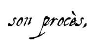
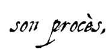

|
La malédiction de Jacques de Molay
[La survivance de l'Ordre du Temple] [Le suaire de Turin]
 Semblable aux martyrs qui célébraient les louanges de Dieu, Jacques de Molay chantait des hymnes au milieu des flammes. Mézeray rapporte qu'on entendit le grand-maître s'écrier : « Clément ! juge inique et cruel bourreau ! je t'ajourne à comparaître, dans quarante jours, devant le tribunal du souverain juge. » Quelques-uns écrivent, dit Vertot, qu'il ajourna pareillement le roi à y comparaître dans un an. Peut-être que la mort de ce prince, et celle du pape, qui arrivèrent précisément dans les mêmes termes, ont donné lieu à l'histoire de cet ajournement. Une autre légende affirmera plus tard que le grand maître du Temple se serait écrié : « Maudits ! Maudits ! vous serez tous maudits jusqu'à la treizième génération de vos races !... ». Tout le monde donna des larmes à un si tragique spectacle, et on prétend que des personnes dévotes recueillirent les cendres de ces dignes chevaliers. Si ces sortes de traditions ne sont pas toujours véritables, elles permettent du moins de croire que l'opinion publique, qui les accueillit, jugeait que les condamnés étaient innocents. Toute l'affaire s'explique par ce mot profond de Bossuet : « Ils avouèrent dans les tortures, mais ils nièrent dans les supplices ».
Semblable aux martyrs qui célébraient les louanges de Dieu, Jacques de Molay chantait des hymnes au milieu des flammes. Mézeray rapporte qu'on entendit le grand-maître s'écrier : « Clément ! juge inique et cruel bourreau ! je t'ajourne à comparaître, dans quarante jours, devant le tribunal du souverain juge. » Quelques-uns écrivent, dit Vertot, qu'il ajourna pareillement le roi à y comparaître dans un an. Peut-être que la mort de ce prince, et celle du pape, qui arrivèrent précisément dans les mêmes termes, ont donné lieu à l'histoire de cet ajournement. Une autre légende affirmera plus tard que le grand maître du Temple se serait écrié : « Maudits ! Maudits ! vous serez tous maudits jusqu'à la treizième génération de vos races !... ». Tout le monde donna des larmes à un si tragique spectacle, et on prétend que des personnes dévotes recueillirent les cendres de ces dignes chevaliers. Si ces sortes de traditions ne sont pas toujours véritables, elles permettent du moins de croire que l'opinion publique, qui les accueillit, jugeait que les condamnés étaient innocents. Toute l'affaire s'explique par ce mot profond de Bossuet : « Ils avouèrent dans les tortures, mais ils nièrent dans les supplices ».
Clément V succomba un mois (20 avril 1314) après l'exécution de Molay, d'une maladie affreuse ; Guillaume de Nogaret, qui avait supervisé l'arrestation des Templiers à travers toute la France en 1307, mourut le 27 avril 1314, empoisonné ; Philippe le Bel, à son tour, disparut quelques mois plus tard, le 29 novembre 1314, au cours d'une chasse au sanglier (il serait tombé de cheval). A sa mort, c'est son premier fils, Louis X le Hutin qui monte sur le trône. Mais il meurt deux ans plus tard, à l'âge de 26 ans, d'une fièvre qu'il aurait contractée en entrant dans une grotte dont la fraîcheur l'avait saisi après qu'il se fût trop échauffé à jouer à la paume. Son épouse, la reine Clémence, étant enceinte, Philippe le Long, frère de Louis, ne prit que le titre de régent : Clémence accoucha, le 15 novembre 1316, d'un fils auquel on donna le nom de Jean, et qui ne vécut que cinq jours (Jean Ier le Posthume).
Philippe prit alors le titre de roi sous le nom de Philippe V ; mais ce ne fut pas sans contestation. Louis X avait eu de Marguerite, sa première femme, une fille, nommée Jeanne, héritière du royaume de Navarre : le duc de Bourgogne, son oncle, prétendait qu'elle devait hériter aussi du royaume de France ; et comme depuis Hugues Capet c'était la première fois que la couronne cessait d'être transmise directement du père au fils, pour remonter du neveu à l'oncle, on pouvait essayer d'opposer la coutume des pays où les femmes règnent aux coutumes des deux premières dynasties qui les excluaient du trône. Cette contestation fut solennellement jugée dans une assemblée tenue à Paris ; et l'on y approuva les anciens usages qui ont toujours eu force de loi, quoiqu'on n'en trouve le texte écrit nulle part, pas même dans la loi salique, qui ne contient pas un seul article relatif à la couronne. Philippe V régna six ans et mourut à 29 ans. C'est le dernier fils de Philippe le Bel, Charles IV, qui monta sur le trône en 1322 avant de mourir lui aussi six ans plus tard. Il était âgé de 33 ans.
Ainsi, en l'espace de quatorze ans, les trois fils de Philippe le Bel, qui tenaient de leur père cette beauté mâle qui donne l'espoir d'une longue vie et d'une nombreuse postérité, montèrent sur le trône, et disparurent sans laisser d'héritiers. La couronne passa à une branche collatérale, dans la personne de Philippe de Valois, premier prince du sang ; mais comme la veuve du feu roi se trouvait enceinte, il ne prit que le titre de régent, jusqu'au jour où elle accoucha d'une fille. La loi salique, invoquée en 1316 par le second fils de Philippe le Bel pour s'emparer du trône, scellait en 1328 l'extinction de la dynastie capétienne.
La survivance de l'Ordre du Temple
[La malédiction de Jacques de Molay] [Le suaire de Turin]
Jacques de Molay a-t-il pris des dispositions pour sauver les documents secrets et les trésors que détenaient les Templiers ? A-t-il voulu que l'Ordre du Temple lui survive ? Aucune preuve historique ne permet de l'affirmer avec certitude, cependant, plusieurs hypothèses ont circulé dont les trois détaillées ci-dessous qui sont considérées comme les plus plausibles par de nombreux historiens :
-
L’hypothèse Gérard de Villers
En juin 1308, le templier Jean de Châlon, du Temple de Nemours, fait une déclaration intéressante devant le pape lui-même : la veille de l'arrestation de Jacques de Molay, un cortège comprenant trois chariots recouverts de paille et une cinquantaine de chevaux quittèrent le Temple de Paris sous la conduite de deux Templiers, Hugues de Chalons et Gérard de Villers, le précepteur de France. On peut facilement imaginer que sur ordre du Grand Maître, ces chariots ont été chargés d'archives et d'or, les 50 chevaux étant destinés à remplacer ceux qui étaient épuisés lors d'un long voyage.
Par ailleurs, suivant le même but, les navires de l'Ordre, la plus grande armada d'Occident qui mouillait à La Rochelle, leur port d'attache, quittent le port, vers une destination inconnue, très probablement le nord de la France. Lorsque la milice du roi arrive à La Rochelle, l'immense flotte a disparue. Les chariots sortis du Temple de Paris au soir du 12 octobre 1307 se sont sûrement dirigés vers le nord de la France pour charger leur cargaison sur les bateaux arrivés de La Rochelle, pour disparaître à tout jamais.
On n'a jamais su quelle était sa destination ni ce qu'elle était devenue, mais il est probable qu'une grande partie d'entre elle se dirigea vers les côtes ibériques. En effet, nombre de Templiers trouvèrent refuge en Espagne et surtout au Portugal où ils s'enrôlèrent dans l'Ordre des Chevaliers du Christ, spécialement créé pour eux par le roi Denis, en 1312. -
L’hypothèse Pierre d'Aumont
Malgré la "catastrophe" (la grande arrestation de 1307), quelques Templiers réussirent à se cacher en France. Pierre d'Aumont, ancien Grand Maître d'Auvergne, fut un de ceux-là. Il y resta jusqu'au dernier jour de Jacques de Molay, comme si un secret espoir de le voir libéré l'avait empêché de s'exiler comme tant d'autres. Peut-être était-ce une dernière volonté du Grand Maître, car au soir du 18 mars 1314, Pierre d'Aumont et huit autres chevaliers, déguisés en maçon, récupérèrent les cendres de Jacques de Molay, pointèrent leurs épées vers le bûcher en criant « MacBenach* ! » et en jurant de venger leur Maître et de faire survivre l'Ordre du Temple. D'Aumont se serait alors rendu en Ecosse et, sur l'île de Mull, aurait été désigné comme nouveau grand-Maître de l'Ordre, le 24 juin 1315. L'Histoire dira que ce noyau de Templiers aida le roi Robert Bruce de manière décisive dans sa lutte contre les Anglais et fut ensuite à l'origine de la constitution de la loge franc-maçonnique Heredom ou "Sainte Maison".
* Cette expression vient de l'hébreu « Makbénach » qui signifie « la chair quitte les os ». Elle a été utilisée la première fois comme cri de ralliement par les compagnons de l'architecte Hiram - qui a construit le Temple de Salomon à Jérusalem - lorsqu'ils ont retrouvé le corps de leur Maître, sauvagement assassiné, et qu'ils ont juré de le venger. Depuis, à travers les siècles, ce cri des vengeurs d'Hiram est devenu le symbole de la lutte des peuples contre l'injustice des rois. Le rituel du meurtre d’Hiram, la quête de son corps par neuf ouvriers, son enterrement, constituaient déjà un temps fort de l’initiation des chevaliers Templiers, au Moyen Age, mais il a encore été amplifié par la franc-maçonnerie du XVIIIe siècle, au point de perdurer jusqu'à nos jours.
-
L’hypothèse Dante Alighieri
Du parti Guelfe, à l'origine, favorable au Pape, Dante rejoindra (avec les Guelfes blancs) le camp des Gibelins et de l'empereur Henri VII. Quand les terribles Guelfes noirs prendront le pouvoir à Florence, en 1302, Dante sera condamné à mort. Il quittera sa ville qu'il ne reverra jamais.
À partir de cette date, il séjournera dans diverses villes d'Italie du nord, notamment à Vérone, et effectuera plusieurs voyages en France où on retrouve sa trace à Paris en 1304, puis entre 1307 et 1310. Certains historiens pensent que Dante a rencontré Jacques de Molay, juste avant son arrestation, en 1307. La raison de cette entrevue est inconnue mais il est probable que Jacques de Molay confia une mission ou des documents au poète italien. On sait que Dante a fait partie des Fidèles d'Amour, une confrérie secrète initiatique très proche des valeurs chevaleresques de l'Ordre du Temple, il est donc possible que Molay lui ait révélé une partie de ses secrets. Dante reviendra à Paris en 1314 pour assister à la mort du Grand Maître sur le bûcher. Dans sa célèbre trilogie "La Divine Comédie" (Enfer – Purgatoire - Paradis), il fait allusion à plusieurs reprises aux Templiers, à leur martyr et à leur possible résurgence.
D'autres hypothèses plus farfelues que l'on sait fausses, aujourd'hui, ont pourtant la vie dure dans l'imaginaire collectif : l'hypothèse Guichard de Beaujeu - qui aurait récupéré une partie du trésor des Templiers - est basée sur un document (dit Schiffman) qui est très controversé ; l'hypothèse Larménius - soi-disant désigné par Jacques de Molay pour lui succéder - est basée sur des documents retrouvés en 1804 par Bernard-Raymond Fabré-Palaprat, mais il a été prouvé depuis qu'ils étaient faux ; l'hypothèse Geoffroy de Gonneville - qui se serait échappé de sa prison et aurait perpétué l'Ordre - est une supercherie grossière créée par le gourou d'une secte aux intentions malsaines…
On ne saura sans doute jamais avec certitude quelles furent les dernières volontés de Jacques de Molay, ni ce qu'il donna et/ou ordonna à ses chevaliers et ses amis juste avant son arrestation, mais l'Histoire a prouvé que des Templiers se sont effectivement réfugiés au Portugal et en Ecosse après 1314, et il est avéré que les Fidèles d’Amour de Dante avaient de nombreux points communs avec les Templiers, notamment leur goût prononcé pour l'ésotérisme et l'hermétisme. Alors même si ces hypothèses ont parfois été teintées de légendes à travers le temps, et même si elles ont souvent été récupérées et déformées par des groupuscules sectaires peu recommandables, tout porte à croire qu'elles sont basées sur des faits historiques réels.
Le suaire de Turin
[La malédiction de Jacques de Molay] [La survivance de l'Ordre du Temple]
 Les mesures au Carbone 14 réalisées en 1988 sur le suaire de Turin ont établi qu'il date d'une période comprise entre la fin du XIIe siècle et le début du XIVe siècle. Afin d'échantillonner les méthodes de calcul, une analyse (en aveugle) a été pratiquée sur la chape de Louis IX, les résultats ont situé avec une certitude quasi absolue, l'origine de ce manteau de cérémonie entre 1263 et 1283, ce qui cadre parfaitement avec les données historiques, puisque le roi meurt de la peste à Tunis en l'an 1270. Les résultats concernant les autres échantillons sont tout aussi précis, lorsqu'on les compare avec des dates précises. Les conclusions pour le suaire de Turin ne peuvent donc pas être contestées. De plus, il a été prouvé scientifiquement que le lin qui a servi à tisser le suaire a été coupé entre 1260 et 1390, affinant ainsi l'analyse au carbone 14.
Les mesures au Carbone 14 réalisées en 1988 sur le suaire de Turin ont établi qu'il date d'une période comprise entre la fin du XIIe siècle et le début du XIVe siècle. Afin d'échantillonner les méthodes de calcul, une analyse (en aveugle) a été pratiquée sur la chape de Louis IX, les résultats ont situé avec une certitude quasi absolue, l'origine de ce manteau de cérémonie entre 1263 et 1283, ce qui cadre parfaitement avec les données historiques, puisque le roi meurt de la peste à Tunis en l'an 1270. Les résultats concernant les autres échantillons sont tout aussi précis, lorsqu'on les compare avec des dates précises. Les conclusions pour le suaire de Turin ne peuvent donc pas être contestées. De plus, il a été prouvé scientifiquement que le lin qui a servi à tisser le suaire a été coupé entre 1260 et 1390, affinant ainsi l'analyse au carbone 14.
Puisque le visage représenté sur le suaire ne peut pas être celui de Jésus, à qui appartient-il ? C'est à cette question sensible que répondent Christopher Knight et Robert Lomas, dans leur livre « Le Second Messie ». Pour eux, cela ne fait aucun doute, le visage représenté sur le suaire est celui de Jacques de Molay. Leur version a le mérite d'être beaucoup plus simple et plus crédible que celle, tortueuse, défendue par les adeptes du Christ.
D'après ces derniers, le suaire du Christ aurait été récupéré par un certain Abgar, roi d'Édesse (la ville d'Urfa, en Turquie), converti au christianisme au début du Ier siècle ; il aurait gardé le suaire après avoir été guéri de la lèpre à son contact. Son successeur étant retourné au paganisme, les chrétiens de la ville auraient dissimulé la relique durant cinq siècles dans une niche. En 944, les Byzantins, qui la nomment mandylion (mot grec désignant une robe ecclésiastique), l'auraient reprise aux musulmans alors maîtres d'Édesse et le suaire serait demeuré à Constantinople jusqu'en 1204, année du premier sac de la ville par les Croisés de la quatrième croisade. C'est à ce moment là qu'il aurait été récupéré par les Templiers. Un siècle plus tard, il serait arrivé entre les mains de Geoffroy de Charnay, alors gouverneur de Normandie, et compagnon d'infortune de Jacques de Molay sur le bûcher, le 18 mars 1314.
Pour Knight et Lomas, ce suaire a été récupéré directement par Charnay entre 1307 et 1314 et le visage qu'il représente est celui de Molay. Pour arriver à cette révélation, ils s'appuient sur six arguments :
-
Leur version est la seule qui coïncidence parfaitement avec toutes les analyses scientifiques réalisées sur le suaire.
-
Le suaire a été utilisé pour recouvrir Jacques de Molay après une séance de torture partciulièrement atroce organisée par Guillaume Imbert, confesseur du roi et grand inquisiteur : On l'a flagellé jusqu'au sang, on lui a enfoncé sur la tête une couronne faite d'objets acérés, pour lui déchirer le cuir chevelu, et enfin, on l'a cloué sur un panneau de bois, à la façon des crucifiés. Ces tortures ont provoqué chez le Grand Maître des réactions chimiques qui ont permis ensuite l'impression de son corps et de son visage sur le suaire.
-
Il y avait deux raisons pour le crucifier : Primo, l'Inquisition affectionnait cette forme de torture ; Secundo, pour Imbert, c'était une manière de punir le Templier par là où il avait péché (les Templiers étaient accusés d'hérésie pour avoir renié la mort du Christ sur la croix).
-
On déshabillait toujours les malheureux, avant de les torturer, et on avait l'habitude de les clouer à des objets qui se trouvaient à proximité.
-
Il a été prouvé scientifiquement que l'homme du suaire devait être vivant et allongé sur un lit pour faire cette empreinte. C'était le cas de Jacques de Molay qui était dans un état proche du coma mais toujours vivant, après l'interrogatoire, alors que Jésus était mort et allongé sur une dalle, après sa crucifixion.
Deux ans plus tard, Jacques de Molay a pu exhiber ses plaies et ses cicatrices lors d'une comparution devant une commission papale, prouvant ainsi les sévices qu'il subissait.
Leur théorie est également confirmée par l'histoire de ce suaire, telle qu'on la connait depuis 1357, date où on l'expose pour la première fois :
En juin 1353, Jean II le Bon autorise Geoffroy de Charney à construire une collègiale à Lirey. Ce Geoffroy de Charnay n'est autre que le petit-neveu de l'autre Geoffroy de Charnay, mort en 1314. L'église est consacrée le 28 mai 1356, il est à noter qu'à cette date, aucun suaire n'est mentionné dans l'inventaire des biens appartenant à ce lieu de culte.
Quatre mois plus tard, Geoffroy de Charnay est tué à la bataille de Poitiers. Jeanne de Vergny, sa veuve démunie, cherche alors des moyens d'existence. Dans l'inventaire des biens de son mari, elle trouve le suaire, soigneusement plié. En l'étalant, elle découvre l'image d'un homme qui peut ressembler au Christ. Bien qu'elle doit savoir que c'est l'image de Jacques de Molay, elle voit tout de suite quel profit elle peut en tirer. Elle arrive à l'exposer comme une relique dans l'église de Lirey et frappe une médaille commémorative qu'elle vend à bon prix.
L'église qui sait que le suaire présente le visage de Jacques de Molay et non de Jésus ordonne qu'il soit détruit. On cesse d'exposer le suaire, mais Jeanne ne le détruit pas et se contente de le cacher.
En se remariant plus tard avec Aymon de Genevainto, un noble jouissant d'un grand crédit auprès de l'Église, elle peut de nouveau penser à exposer le suaire. C'est chose faite en 1389, avec l'accord du pape, qui n'est autre que que le neveu par alliance de Jeanne, et malgré les tentatives du clergé français qui sait très bien que ce suaire est un faux.
En fait, le pape accepte de fermer les yeux sur cette supercherie pour une raison bien simple : A cette époque, tout indique que Jacques de Molay passe souvent pour être un saint martyr, et que l'on va même parfois jusqu'à l'identifier à Jésus lui-même, assassiné lui aussi par Rome (non plus par l'empire romain, cette fois, mais par l'Église romaine). Lorsque la Peste noire s'abat sur le monde chrétien, l'Église redoute que l'image miraculeuse de Jacques de Molay dessinée sur le suaire ne révèle que l'Inquisition a crucifié le Grand Maître de l'Ordre du Temple avant de le mettre à mort. Il ne faut surtout pas que l'on découvre l'identité de l'homme qui a laissé son empreinte sur ce drap, car l'Église risquerait alors d'être balayée par l'émergence d'un nouveau culte, celui de Jacques de Molay, comparable à celui de Jésus Christ, dont il est issu. On pare au danger en acceptant d'exposer le suaire en public, et en prétendant qu'il s'agit bien du visage du Christ, même si on a dit le contraire auparavant.
[La malédiction de Jacques de Molay] [La survivance de l'Ordre du Temple] [Le suaire de Turin]
   |